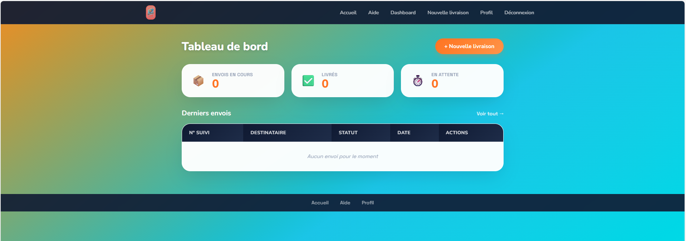
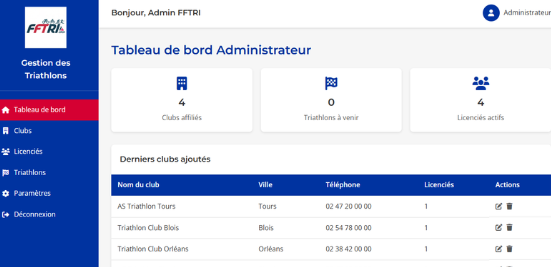
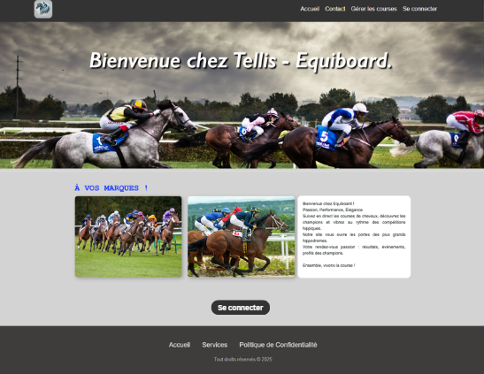
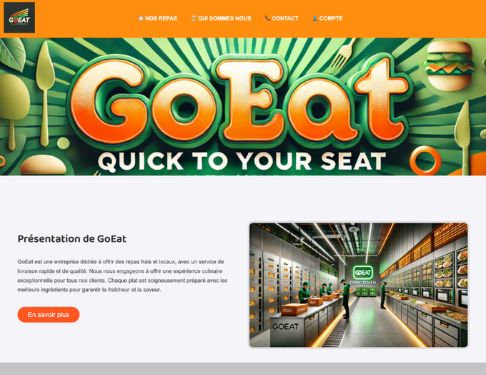
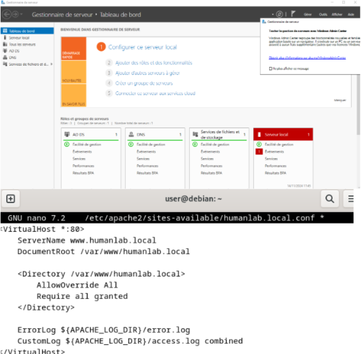

Formation en Services Informatiques spécialisé aux Solutions Logicielles et Applications Métiers.
Spécialités Mathématiques & NSI, mention Assez Bien.
Certifications OpenClassrooms validées pour approfondir mes compétences techniques.
Cette certification m'a permis d'approfondir le paradigme POO en Python pour structurer des applications. J'ai appris à concevoir des "classes" et des "méthodes", et à appliquer le principe "d'héritage" pour créer des hiérarchies logiques et réutiliser le code efficacement. Ayant déjà des bases grâce à ma formation, j'ai pu architecturer des programmes modulaires et maintenables, passant ainsi du script simple au développement d'applications bien structurées.
Cette certification m'a permis de maîtriser les fondamentaux de ces outils essentiels pour tout développeur. J'ai appris à installer et configurer Git et GitHub, puis à utiliser les commandes de base pour contrôler l'historique de mes fichiers et gérer mes projets. De plus j'ai acquis les clés pour corriger les erreurs courantes de manière efficace, une compétence indispensable pour travailler seul, en équipe ou sur des projets open source.
Cette certification, m'a fourni une introduction complète aux concepts fondamentaux du langage orienté objet. Alors, j'ai approfondi des principes clés comme les classes, les objets, l'héritage et les interfaces, ainsi que de la syntaxe de base nécessaire pour écrire des programmes fonctionnels.
Cette certification m'a initié aux fondamentaux de ce langage performant et beaucoup utilisé. Ainsi, j'ai appris les notions de base puis avancées de la syntaxe C++ et de la programmation orientée objet, une approche qui rend les programmes plus structurés et évolutifs.
Cette certification m'a permis d'acquérir les bases pratiques du framework pour développer des applications web monopages. Ainsi, j'ai appris à architecturer une application avec des components, à gérer l'interactivité via la liaison de données et les événements, à structurer les templates avec les directives et le "control flow", ainsi qu'à implémenter la navigation avec le "routing" et la logique métier réutilisable via les services.
Cette certification m'a permis de maîtriser la syntaxe et la logique fondamentale de JavaScrip, en apprenant à manipuler des variables, des structures de contrôle et des fonctions. J'ai acquis des compétences pratiques pour rendre un site web dynamique et interactif en manipulant le DOM, en gérant les événements et en validant un formulaire de saisie de données côté client.

Développée en équipe, cette application web centralise la gestion des livraisons de colis entre expéditeurs, transporteurs et points relais. Conçue selon une architecture reposant sur une API REST en PHP/Symfony, elle permet aux expéditeurs de créer et suivre leurs envois, tandis que les transporteurs consultent et gèrent les livraisons qui leur sont assignées. Accessible sur authentification, la solution propose des tableaux de bord selon le profil et une application Android complémentaire.

Développée en équipe, cette application web centralise la gestion de compétitions de triathlon. Conçue en architecture MVC sous , elle permet aux gestionnaires d'organiser des épreuves et aux responsables de clubs d'administrer leurs licenciés. Accessible sur authentification, le site propose tableaux de bord personnalisés et la gestion CRUD des triathlons/clubs/licenciés.

Développé en équipe, EquiBoard est une application web full-stack permettant une gestion de courses hippiques avec authentification multi-rôles (les propriétaires qui inscrivent et gèrent les chevaux et jockeys / les gestionnaires qui organisent les courses et saisissent les résultats).

Dans le cadre de ma spécialité développement, j'ai participé à la réalisation de GoEat, un site vitrine pour un service de livraison de repas. Ce projet en groupe m'a permis de collaborer sur la partie front-end, en mettant l'accent sur l'interface utilisateur et l'expérience de navigation.

Infrastructure réseau complète avec serveur Windows Server 2019 et serveur Debian 12 , développée en binôme pour mettre en place un environnement d'entreprise simulé. Projet scolaire réalisé pour s'initier aux bases de système et virtualisation, afin d'acquérir des compétences transverses essentielles en entreprises.
Je suis actuellement à la recherche d'une alternance pour l'année scolaire 2026/2027 dans le développement web ou applicatif.